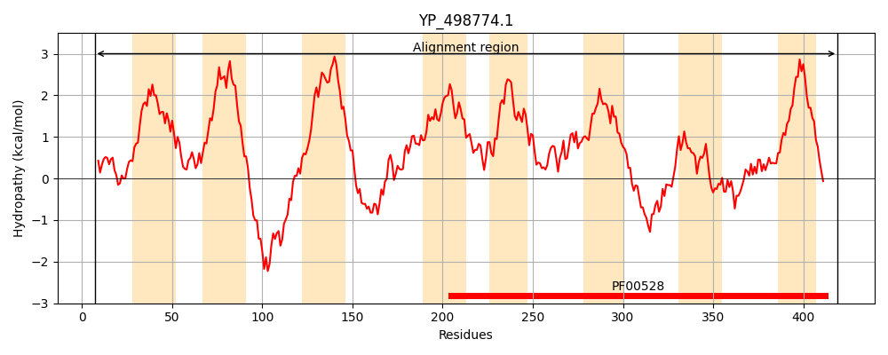
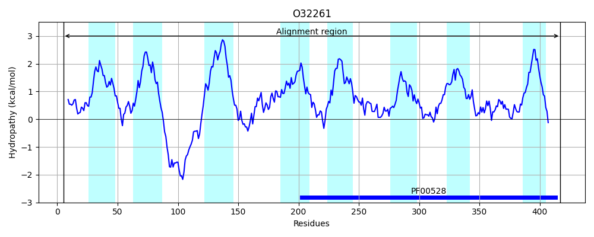
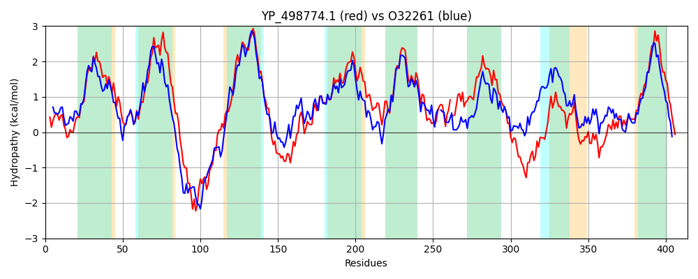

Hit Accession: O32261
Hit TCID: 3.A.1.1.2
Hit Description: gnl|BL_ORD_ID|7104 gnl|TC-DB|O32261|3.A.1.1.2 Putative arabinogalactan oligomer transport system permease protein ganP OS=Bacillus subtilis GN=ganP PE=3 SV=1
Mach Len: 414
e:0.000000
Query TMS Count : 8
Hit TMS Count: 8
TMS-Overlap Score: 8.550000
Predicted Substrates:CHEBI:24151;galactooligosaccharide
BLAST Alignment:
Score: 1160 , Bit scores: 451 bits, E-value: 8.4e-158, Alignment length: 414, Percentage identity: 50
Query: 7 KLAALLSVIPGLGQFYNKRPIKGTIFFIFFISFISVFYSFLNIGFWGLFTLGTVPKLDDSRVLLAQGIISILLVAFAIMLYIINILDAYRNAERFNRNEEIKDPKARMVATWDKTFPYLLISPGTFLLIFVVVFPLIFMFGVAFTNYNLYNAPPRHTLEWVGLDNFKTLFTIGVWRKTFFSVITWTLVWTLVATTLQIALGLFLAIIVNHPVVKGKKFIRTVLILPWAVPSFVTILIFVALFNDEFGAINNDILQPLLGVAP-AWLSDPFWAKVALIGIQVWLGFPFVFALFTGVLQSISSDWYEAADMDGASSWQKFRNITFPHVIYATAPLLIMQYAGNFNNFNLIYLFNKGGPPVSGQNAGSTDILISWVYNLTFEFNNFNMGAVVSLIIGFIVAIVAFIQFRRTSTFKDE 419
++A LLS+IPGLGQFYNK+ IKG +F SF +VF LN+GFWG+FTLGT D+S LLA+GII++++ F + +Y +N+ DA+++ ++ + N+ + K + + +PY++ P F+LIF V+FP++F F +AFTNY+LY++PP ++WVG F +FT+ +WR TFF V+ WT+VWTL A+TLQ+ LG+FLAIIVN ++ K+F RT+LILPWAVP FVTILIF LFND FGA+N+DIL G+ P W++D W+++ALI +Q WLGFP++F + TGVLQSI D YEAA +DGAS + K R IT P V A AP++I Q+ NFNNFN+IYLFN GGP V+G AG TDIL+SW+Y LT + + +++ A +++++ V +A QFR+T +FK+E
Sbjct: 5 QVALLLSIIPGLGQFYNKQWIKGIVFLFLGASFFAVFGDLLNMGFWGIFTLGTEVPRDNSVFLLAEGIIAVIVTCFGLAVYYVNLRDAFQSGKQRDENKPLSSLKEQYQHIISEGYPYVVSGPSLFILIFAVIFPILFSFALAFTNYDLYHSPPAKLIDWVGFQTFANIFTVDIWRSTFFDVLAWTVVWTLAASTLQVTLGIFLAIIVNQKDLRFKRFFRTILILPWAVPGFVTILIFAGLFNDSFGAMNHDIL-AFFGIDPLPWMTDANWSRLALILMQGWLGFPYIFLVSTGVLQSIPDDLYEAATIDGASVFSKLRYITLPMVFIAMAPIIITQFTFNFNNFNIIYLFNGGGPAVTGSTAGGTDILVSWIYKLTMQSSQYSLAAALTILLSVFVISIALWQFRQTKSFKEE 417 | Protein Hydropathy Plots: |
|---|
|  |  |
Pairwise Alignment-Hydropathy Plot:
|
|---|
|  |